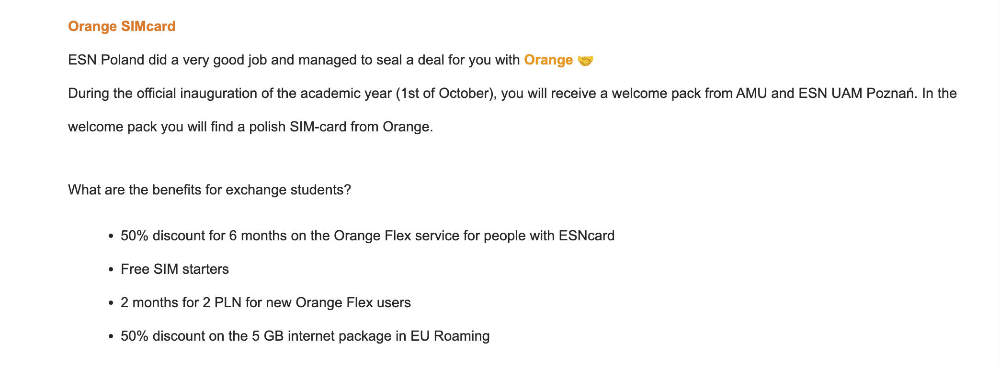

本文文長，請善用目錄快速跳轉。
收到學校的錄取通知，準備前往波蘭交換或留學？ 以下是我親身經歷的申請流程與實用資訊，涵蓋 D 類學生簽證申請、國際學生證選擇、PESEL 辦理，以及交換半年的銀行帳戶使用建議。
波蘭 D 類學生簽證申請全攻略
D 類長期簽證申請資訊
如果你準備去波蘭交換或留學，你需要申請 D 類長期簽證。 簽證規定、費用、文件要求每年可能調整，一切以辦事處官網公告為準。
官方說明 👉 波蘭台北辦事處官方網站的 D 類簽證規定
線上預約與申請資料填寫 👉 www.e-konsulat.gov.pl
費用參考（依我申請年度）：
- 原本：NT$ 2,761
- 調整後：NT$ 4,659（7 月已變更，但網站一度未更新）
申請需要準備的文件（依我申請當年的要求）：
- 申請文件（依系統填寫後列印）
- 護照正本及影本一份（注意護照效期）
- 申根旅遊醫療保險正本及影本一份
- 財力證明（僅限本人名下銀行帳戶或信用證明）
- 語言能力證書正本
- 學校錄取或在學證明正本
- 機票訂位紀錄影本
- 證件照兩張（一張貼於申請表，另一張夾附）
申請經驗回顧
申請時程：
- 七月中：收到交換學校 offer 通知，開始看機票、買機票。預約系統很空，沒有立刻預約（事後證明是錯誤決定）
- 八月初：收到錄取通知書正本。預約系統出現異常，無法預約（但後來才知道，其實可以填資料直接在辦理時間去辦事處申請）
- 八月底：預約簽證辦理
-
九月底：
- 週一：辦理簽證，當下通知補件
- 週二：臨時改用國泰世華信用卡附卡信用證明，原需一週，改加急處理三天拿到
- 週四：上午透過電子信箱補件，下午收到可以領回護照的通知
- 週五：領回護照
- 週日：出發日
- 十月初：交換學校開學
對，你沒看錯，我是九月底才辦好簽證。因為沒打算先去歐洲玩（如果有打算在歐洲玩，建議九月初就到歐洲，歐洲十月初已經變冷了），再加上我的offer比較晚下來，才比較晚辦理簽證。 七月有看過預約系統是正常的，預約也沒有很滿，下一週都是可以預約的，但是不確定其他文件什麼時候處理好，就沒有先預約。 八月初系統異常，再加上之前系上學長與網絡上的分享，都說一週內簽證會下來，就想說先處理要帶去的行李等其他雜事，八月底才預約簽證辦理。
原本簽證辦理順利，週三或週五可以領回護照（簽證要黏在護照上，所以辦理的時候會收走），可是當下被通知父母銀行存款不能當作財力證明（只有本人的銀行存款可以），需要補件財力證明。
財力證明注意事項：
- 不能用父母的存款證明，必須是申請人本人名下的銀行帳戶或信用卡信用證明
- 如果使用信用卡，需申請信用證明，向信用卡客服申請，不是銀行櫃台
- 信用證明必要時可請求加急處理，最快三天申請下來
因為有申請國泰世華的附卡，因此想說改以信用卡來作為財力證明。 不過網路上沒有國泰世華附卡申請相關資料的說明與分享，也不知道其實我要申請的資料其實叫做信用證明，所以我直接到國泰世華銀行去問。 然而銀行櫃台不處理信用卡事務，信用卡相關資料需要打客服詢問和申請。 印象中信用證明原本要一週的處理時間，但是我請客服幫我加急處理，每天打電話關心進度，花了三天申請到國泰世華附卡的信用證明。 週四上午透過電子信箱補件，下午收到可以領回護照的通知，週五拿回護照，完全是壓死線。
預約與辦理的小技巧：
- 回想起來拿到offer應該先預約比較好，預約當天文件還沒下來可以事後補件，或是預約日後另擇日在辦理時間補辦。
- 不過後來有聽說，系統沒辦法預約也還是可以先填寫資料，直接在接受申請的時間前往辦事處。
- 預約時間似乎沒有那麼強硬限制，比我原本預約的時間早抵達辦事處，在前一個預約時段就可以辦理，似乎只要是同一天的預約，一樣可以進行申請。
題外話，出國前選擇信用卡時，確認海外消費回饋的適用地區。 我去歐洲交換時，正好遇到歐洲對信用卡政策調整，遇到許多信用卡雖然宣稱有海外回饋，但實際上只適用日韓或部分歐洲國家，並不涵蓋波蘭。 國泰世華在我當時的方案中規則較單純，回饋能抵扣手續費還有剩，而且當時還沒發生公關危機，所以才選它。
國際學生證申請與比較
歐洲留學生與交換生如果有規劃旅遊必備國際學生證， 有兩種常見的國際學生證可供選擇： ISIC（International Student Identity Card） 和 ESNcard（Erasmus Student Network Card） 。
| 國際學生證 | ISIC | ESNcard |
|---|---|---|
| 適用範圍 | 國際學生身份證，全球通用，合作商家遍布各國。 | 由 Erasmus 學生組織推出，合作商家以歐洲為主。 |
| 申請方式 | 台灣/線上 | 波蘭/線上 |
| 費用/郵資 | 400 元 / 80 元 | 400 元（50 茲羅提）/ 8 元（1 茲羅提） |
| 郵寄地點 | 臺灣國內郵寄 | 郵寄到 ESN 分部 |
我原本打算申請永豐銀行與 ISIC 合作的聯名卡，但欲申請的時候，正好遇到換卡與歐洲金融政策調整，暫停受理。如果你可以申辦這張卡務必申請，聽說神級好用。
優惠比較
兩者在我當年度提供的優惠其實差異不大， ESNcard 的優惠已經足夠覆蓋我的需求，包括：
-
交通：
- Omio
- Flix bus/train
- Ryanair
-
電信：
- Orange Flex 優惠方案，初申辦前2個月2茲羅提，或是初申辦前6個月半價
- Orange Flex免費SIM卡（手機太舊，不能用eSIM）
-
活動：
- 可參加 ESN 舉辦的各類學生活動 （部分需額外付費，例如 Welcome Days 七天活動約 200 波蘭茲羅提，但我並沒有參加全部行程，真盤:D）
我的旅行方式比較hardcore，常常選擇睡在夜車上省住宿費。 但如果你比較重視睡眠品質、希望住得舒服，而且常用 Booking.com 訂房， 那麼 ISIC 也是不錯的選擇，而且ISIC也有Flix bus/train、華航、菲律賓航空等多種交通優惠。
順帶一提，因為Orange flex的優惠方案我一個都沒享受到，容我留紀錄靠北ESN波茲南分部負責人。 當初信件中對優惠方案的描述如下：

怎麼看都這些優惠應該能夠享受到吧，然而實際上，前2個月2茲羅提和前6個月半價的方案只能擇一。 前6個月半價的方案折扣碼不主動給我們，要自己去官網找，官網寫得像是這個折扣碼是能夠兩種方案都使用。 填表單主動給我們的折扣碼是比較不優惠的前2個月2茲羅提，也沒有特別講說這個折扣碼是前2個月2茲羅提的方案。 而且知道是初辦才享優惠，也是因為我曾經刪過帳號才知道。 也就是說，在Orange flex刪除帳號仍會保留顧客個資。 不清楚波蘭的消保法規如何，但是至少在台灣有概率成為消費爭議案件。 那期間根本在跟ESN負責人和Orange玩文字遊戲，瞬間英文變得超好🙂
好了，抱怨完回歸正題。
國際學生證優惠查詢：
- ESNcard 👉 esncard.org/
- ISIC 👉 www.isic.com.tw/ch/local-discount_list.html
ESNcard 申請流程（波蘭）
- 前往ESN 這個網站的 Get your ESNcard 區塊
- 選擇 I'm international student
- 線上填寫資料並付款，可選擇領取方式：郵寄至波蘭國內個人地址或到 ESN 分部領取
- 約 3 個工作天後帳號會啟用
- 登入ESNcard官網，在各優惠介紹頁面右方的 Get your voucher! 區塊領取優惠折扣碼
我選擇了到分部領取，等了快兩週才收到領取通知。 ESNcard需要貼大頭照，如果要申請，記得帶證件照出國。
波蘭 PESEL 申請指南
在波蘭停留超過 90 天，就必須申請 PESEL（波蘭人口登記號碼）。
注意：學生證上標示的「PESEL number」並不是正式的完整號碼，需要自行到市政或鄉鎮辦公處申請。
費用
辦理 PESEL 完全免費
為什麼需要 PESEL？
PESEL 是波蘭的全國人口登記系統編號，有了它可以：
- 辦理波蘭健保（對，波蘭有健保！）
- 開設銀行帳戶（部分網銀要求 6 個月內補件）
- 處理其他行政事務（如報稅等）
申請小提醒：
- 年紀較大的行政人員可能不會英文，申請文件也多為波蘭語。
- 使用 Google 翻譯可以自行辦理。
- 有 ESNcard 的學生，可以申請 Buddy 陪同協助，請 Buddy 帶你去辦理最快。
申請表格取得方式
- 可自行列印
- 到市政/鄉鎮辦公處領取
建議到現場向服務台索取，因為網路版本與我實際拿到的版本不完全相同，這邊就不提供下載列印連結。 印象中申請表會需要舍監的簽名，確認你真的住在那裡，但是網路版本沒有這部分。
PESEL官方資訊：Obtain a PESEL Number
波茲南辦理經驗分享
我交換的學校位於波茲南，辦理地點位於Libelta 16/20（瓢蟲超市附近）
- 預約：必須先透過波茲南官網預約
-
當天流程
- 攜帶申請表＋護照
- 到現場後會看到一個顯示叫號的黑板，左下方有報到機台。
- 先報到，等待叫號後才可進入黑板下方的門。
- 場內有座位等候區，我當時大約等了半小時才被安排到窗口。
- 把申請表和護照遞給櫃檯人員，可能會被問問題（我沒有被問，但是我朋友有被問）。
建議提早報到：預約時間並不保證準時受理，我那天幾乎像重新現場排隊。
交換半年不用網銀？我的實際經驗與替代方案
很多人第一反應可能是：「去交換怎麼可能不用開銀行帳戶？不開要怎麼繳房租？」但其實，在歐洲並非所有情況都需要網銀——我在波蘭交換半年，就完全沒用到網銀。
為什麼我能夠不用網銀？
-
歐洲刷卡普及度高
- 大部分消費能直接用信用卡或簽帳卡付款。
- 通常能使用網銀的地方，也同時支援信用卡與簽帳卡付款。
- 在交換期間，只有逛波蘭的二手市集時，才真的只能用現金。
-
攜帶足夠現金繳房租
- 由於我租的是學校宿舍，半年房租不算太高，所以我可以攜帶足夠的現金。
- 如果房租較高或租期一年，攜帶現金要注意入境金額上限為10,000歐元。
房租怎麼繳？
學校會提供一組個人專屬帳戶（類似台灣的繳費虛擬帳號），可以直接到郵局進行現金匯款。
手續費比較：
- 當地現金匯款：需支付匯費（便宜，像買一段車票）。
- 跨國匯款到網銀：支付匯費、電匯費、解匯費（較貴，像買三段車票）。
所以即使網銀轉帳付房租看似免費，一次性跨國匯款金額不夠高，沒辦法攤平手續費的話，網銀轉帳的成本較高。 跨國匯款的費用超過40萬才划算，然而我只有交換半年，總花費沒有超過25萬。
如果還是想開網銀？
不過沒有開網銀就必須承擔攜帶現金的風險，如果不想保管現金，想開網銀以下是熱門選擇：
- Revolut
- Wise
我其實有開Revolut帳戶備用，朋友們也都是使用Revolut，這邊主要以Revolut來介紹。 Revolut開戶之後使用方法和簽帳卡一樣，不過他可以產生一次性簽帳卡，歐洲銀行轉帳、平日換匯免手續費，跟朋友們之間分帳很方便，唯一的缺點是沒有存款利率。 建議申辦的時候使用好友連結註冊，可以在網路上找別人分享的連結，賺開戶回饋金。 建議在臺灣銀行換匯，匯率一定是最好的，但是臺灣沒辦法直接兌換茲羅提，只能先兌換美元、歐元，入金Revolut建議兌換美金。
Revolut入金方式：
- 一次性大額跨國匯款（電匯）
- 手續費比例可以壓低，比信用卡儲值划算
- 須先在台灣處理，本人匯款或簽署代理匯款
- 以台灣銀行跨國匯款為例，每筆手續費為匯出金額 0.05%（MIN.USD10 MAX.USD30），郵電費為USD$10，中轉費另計，Revolut不用解匯費
- 信用卡儲值
- 隨時隨地可入金
- 匯率比照信用卡海外消費
- 無海外消費回饋，還會額外收手續費
- 超級不推薦
Revolut 還有一些限制：
- 沒有實體分行，不能直接存現金
- 無法透過 ATM 存款
- 雖然可以產生條碼到特定金融機構存現金，但波茲南沒有這項服務，而且會收手續費
結語
以上是我前往交換與交換前期，一些重要、需要注意的申請事項與經驗分享，以及遇到的小抓馬，希望有幫助到即將前往交換、留學的你，或者至少有娛樂到你（？